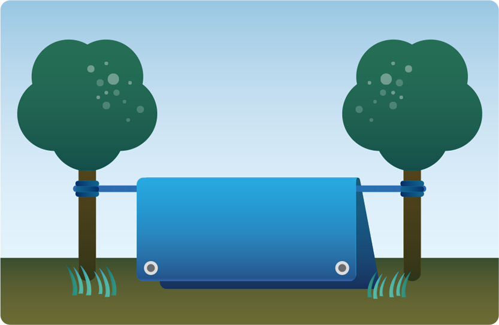
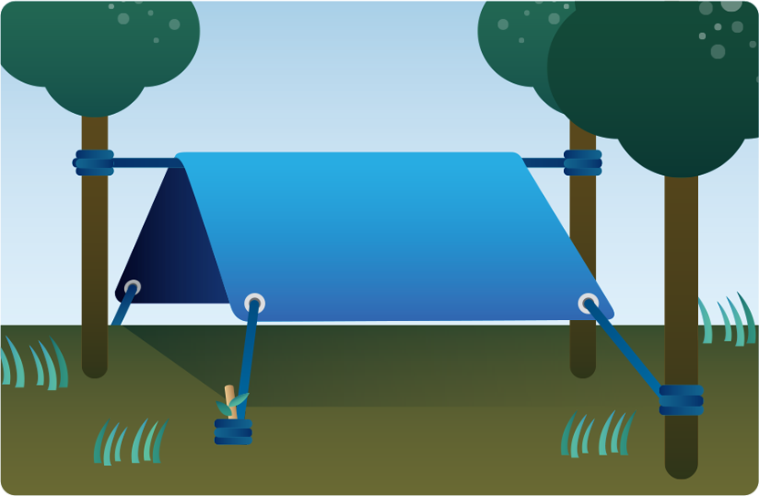
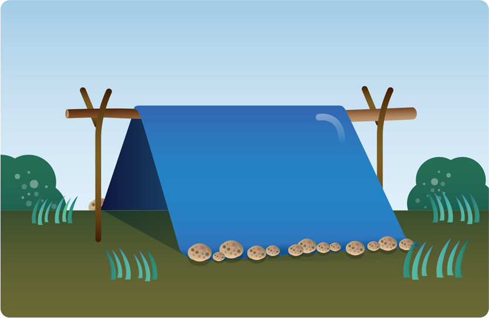
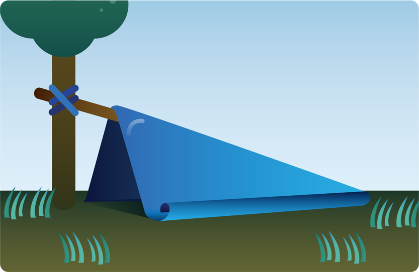
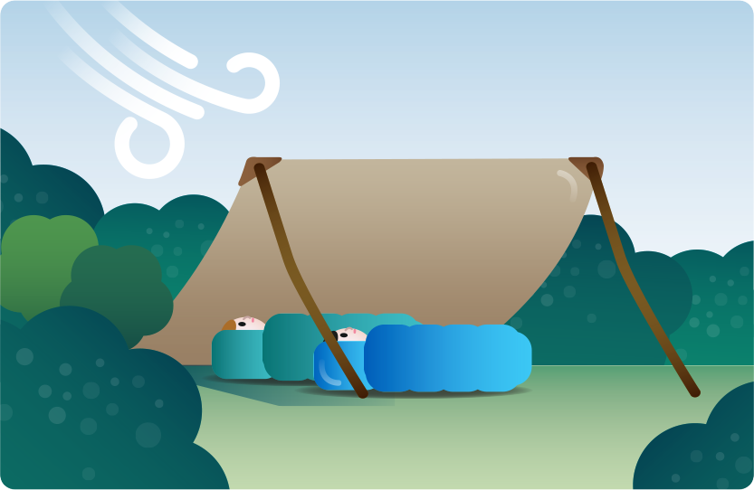

지진, 화재, 강풍으로 집이 무너졌거나 안전하지 않다면 다른 건물로 이동해 구조를 기다릴 수밖에 없습니다.
도시 전체가 고립된 상태에서는 응급구호물품이 갖추어져 있을 만한 공공시설(소방서, 주민센터, 학교, 도서관 등)을 우선 찾아보는 것이 좋습니다.
공공건물 또는 빈 집에 들어갈 때는 파손된 곳이 없는지 잘 확인합니다. 붕괴 위험이 있는 건물에는 들어가지 말아야 합니다. 사람이나 동물의 사체가 있다면 세균에 감염될 수 있으므로 역시 안전하지 못한 곳입니다.
안전하다고 판단되면, 제일 먼저 가스밸브를 잠그는 것을 잊지 마십시오.
노숙할 수밖에 없는 상황에서 캠핑용 텐트는 눈, 비, 바람을 효과적으로 차단하는 훌륭한 임시 안식처입니다. 그러나 재난 대피시 무거운 텐트를 들고 이동하기는 쉽지 않습니다.
텐트 세트에 포함된 덧지붕이나 모서리에 구멍 처리가 된 방수포(Tarp)로도 비와 이슬을 피할 수 있는 임시 지붕을 만들 수 있습니다.
나무나 기둥 사이에 로프를 팽팽하게 묶고 방수포를 널어 겁니다.
모서리 구멍에 끈을 걸어 매듭을 짓고 주변의 다른 나무나 돌에 묶어 고정시킵니다.
기둥이 될 만한 구조물이나 로프가 부족해도 여러 방법으로 응용할 수 있습니다.
 인원수에 비해 방수포가 작을 때는 바람을 등지고 펼친 형태로 설치합니다.

지붕은 어떤 형태로는 비스듬히 경사가 져야 합니다. 평평하면 비, 이슬이 흘러내리지 못하고 고여 파손될 수 있습니다.
큰 비닐이나 서바이벌 담요를 방수포 대용으로 쓸 때는 끝부분을 묶거나 테이프를 둘러 모서리가 찢어지지 않게 합니다.
극한 상황에서는 다음과 같이 자연의 재료를 이용해서도 임시 안식처를 만들 수 있습니다.
몸이 차가운 땅에 직접 닿지 않게 마른 낙엽을 푹신하게 깔고 > 굵은 나뭇가지로 뼈대를 짓습니다. > 곁가지가 많은 잔가지들을 얹고 > 나뭇잎을 빽빽하게 덮습니다.